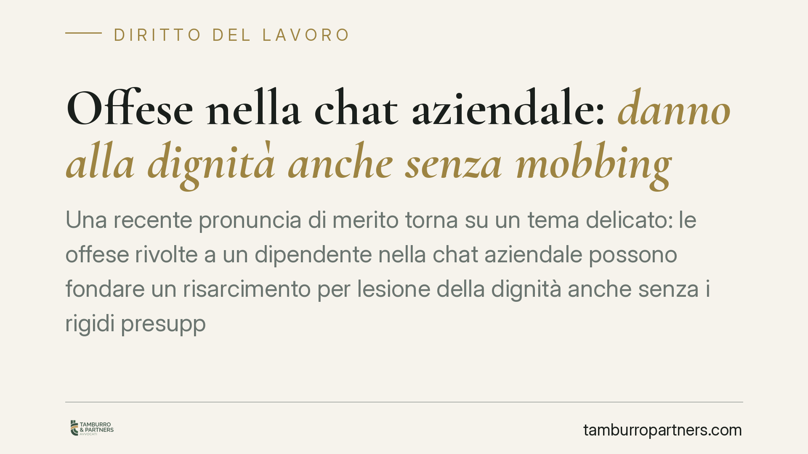

Offese nella chat aziendale: danno alla dignità anche senza mobbing
Una recente pronuncia di merito torna su un tema delicato: le offese rivolte a un dipendente nella chat aziendale possono fondare un risarcimento per lesione della dignità anche senza i rigidi presupposti del mobbing. In gioco l'art. 2087 c.c. e il computo delle assenze nel periodo di comporto. Un chiarimento utile sia per chi gestisce il personale sia per chi lo subisce.

Il caso
Una recente pronuncia della Corte d'Appello di Firenze è stata segnalata dalla stampa specializzata in materia di tutela della dignità del lavoratore e di computo delle assenze nel comporto. Gli estremi esatti della decisione (numero, sezione e data) non risultano a oggi verificabili da fonti ufficiali: ne diamo conto come orientamento di merito, non come precedente consolidato. Il principio, tuttavia, si inserisce in un filone argomentativo noto e permette di fare chiarezza.
La vicenda riguarda un dipendente destinatario di condotte offensive in una chat aziendale. Le assenze per malattia che ne sono derivate avevano portato il datore a procedere al licenziamento per superamento del periodo di comporto. Il giudice avrebbe ritenuto illegittimo il recesso, ricollegando la malattia alla condotta vessatoria dell'azienda.
Inquadramento normativo
Il perno è l'art. 2087 del Codice civile, che impone al datore di adottare le misure necessarie a tutelare non solo l'integrità fisica, ma anche la personalità morale del lavoratore. È una norma di chiusura del sistema: fonda un obbligo di protezione ampio, la cui violazione genera responsabilità di natura contrattuale.
È qui la distinzione decisiva. Il mobbing richiede la prova di una condotta sistematica, reiterata nel tempo e sorretta da un intento persecutorio: un onere probatorio notoriamente gravoso. La responsabilità ex art. 2087 c.c. opera invece su una soglia più accessibile: è sufficiente dimostrare l'inadempimento dell'obbligo di protezione e il danno che ne è derivato, senza dover ricostruire un disegno vessatorio unitario. Le offese in chat, anche isolate, possono quindi rilevare di per sé.
Sul versante del licenziamento viene in rilievo l'art. 2110 c.c., che disciplina il cosiddetto comporto: il periodo durante il quale il lavoratore assente per malattia è tutelato contro il recesso, e il cui superamento legittima, in astratto, il licenziamento. La giurisprudenza di legittimità è però costante nel ritenere che non si computino nel comporto le assenze determinate da una malattia riconducibile alla nocività dell'ambiente di lavoro o a condotte datoriali. In tali casi il datore non può invocare un'assenza che è conseguenza del proprio inadempimento.
Implicazioni pratiche
Il dato più significativo riguarda gli strumenti di comunicazione interna. Chat aziendali, gruppi di messaggistica e piattaforme collaborative sono parte integrante dell'ambiente di lavoro: ciò che vi accade rientra pienamente nel perimetro dell'obbligo di protezione ex art. 2087 c.c. Non si tratta di spazi informali sottratti alle regole del rapporto.
Per il datore, questo significa che un clima comunicativo lesivo può tradursi in due distinte conseguenze: un obbligo risarcitorio per danno alla dignità e l'impossibilità di fondare un licenziamento sulle assenze che quel clima ha provocato. Due profili autonomi, che possono sommarsi.
Per il lavoratore, la lettura in chiave di art. 2087 c.c. abbassa l'asticella rispetto al mobbing: non occorre dimostrare un piano persecutorio, ma documentare la condotta lesiva e il nesso con il pregiudizio subito, anche in termini di salute.
Cosa fare in concreto
- Datori: adottate e diffondete una policy scritta sull'uso delle chat e degli strumenti di comunicazione aziendale, che qualifichi espressamente le condotte offensive come illecito disciplinare.
- Datori: prima di procedere a un licenziamento per comporto, verificate l'origine delle assenze; è opportuna un'analisi preventiva quando la malattia possa ricollegarsi a dinamiche interne o all'ambiente di lavoro.
- Lavoratori: conservate e archiviate i messaggi lesivi con data, autore e contesto, evitando manipolazioni che ne compromettano l'utilizzabilità.
- Lavoratori: documentate il nesso tra la condotta subita e il pregiudizio alla salute, ad esempio tramite certificazione medica che dia conto dell'origine del disturbo.
- Entrambi: distinguete sul piano probatorio la contestazione di mobbing da quella fondata sull'art. 2087 c.c., che segue presupposti e oneri differenti.
Resta ferma l'opportunità di valutare ogni situazione nel concreto: la riconducibilità della malattia alla condotta datoriale è un accertamento di fatto, che va sostenuto con prove puntuali.
---
Contributo informativo a cura di Tamburro & Partners Avvocati — Avv. Giuseppe Tamburro. Non costituisce parere legale.
Ogni storia di lavoro ha i suoi tempi.
Se gestisci HR e vuoi un confronto su contenzioso, ispezioni o licenziamenti, scrivi allo studio. Ti rispondiamo entro un giorno lavorativo.